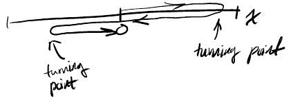
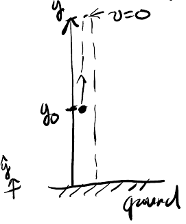
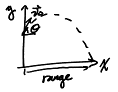
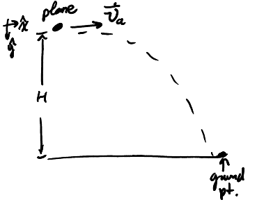

Kinematics
Table of Contents
1. Terminology
Position is the location of a system. It requires the choice of an origin, units to describe the location, an axis, and the orientation (positive direction) of that axis.
Displacement is a change in position: \(\Delta x = x_{i + 1} - x_i\).
The net displacement is the sum of all the displacements, or the final position minus the initial position: \(\Delta x_\text{net} - \sum_{i=1}^{n} \Delta x_i = x_\text{final} - x_\text{initial}\).
The distance is the total distance the system travels. Note that distance is not necessarily the same as the absolute value of displacement. For example, in a path with turning points, the net displacement might be zero, yet the distance is most definitely not zero:

The average speed is the total distance over the time interval. This value will always be positive, since distance is always positive. Note that a downside of this is that it does not tell you what direction the system is moving.
The average velocity, on the other hand, is defined as \(\bar{v} = \frac{\Delta x}{\Delta t}\). Its sign does tell you the direction of motion. However, for system that changes velocity significantly over time, the average velocity often does not describe the motion very well.
Instead, we can use instantaneous velocity, which is the velocity at an instant. It is defined as:
\[ v(t) = \lim_{\Delta t \to 0} \frac{\Delta x}{\Delta t} = \frac{\text{d} x}{\text{d} t} \]
Its units are \(\frac{\text{m}}{\text{s}}\). This is the slope of the tangent line of a position versus time graph at a given time.
As velocity changes over time, we get acceleration. The acceleration is defined as:
\[ a(t) = \lim_{\Delta t \to 0} \frac{\Delta v}{\Delta t} = \frac{\text{d}v}{\text{d}t} = \frac{\text{d}^2x}{\text{d}t^2} \]
Its units are \(\frac{\text{m}}{\text{s}^2}\).
2. Kinematic Equations
Assuming that acceleration is constant, we can derive several kinematic equations. Starting with:
\begin{aligned} a &= \frac{\text{d}v}{\text{d}t} \\ \text{d}v &= a\text{ d}t \end{aligned}Integrating both sides, we have:
\begin{aligned} \int \text{d}v &= \int a\text{ d}t \\ v(t) - v_0 &= at \end{aligned}Rearranging, we obtain:
\begin{align} \boxed{v(t) = at + v_0} \end{align}Similarly, we know that for velocity:
\begin{aligned} v(t) &= \frac{\text{d}x}{\text{d}t} \\ \text{d}x &= v(t) \text{ d}t \\ \int \text{d}x &= \int v(t) \text{ d}t \end{aligned}Substituting (1) for \(v(t)\), we have:
\begin{aligned} \int \text{d}x &= \int (at + v_0) \text{ d}t \\ x(t) - x_0 &= \frac{1}{2}at^2 + v_0t \end{aligned}Thus, we can rearrange this to obtain:
\begin{align} \boxed{x(t) = x_0 + v_0t + \frac{1}{2}at^2} \end{align}By combination of (1) and (2), we can also obtain the following equation:
\begin{align} \boxed{x(t) - x_0 = \frac{(v(t))^2 - v_0^2}{2a}} \end{align}Similarly:
\begin{align} \boxed{x(t) - x_0 = \frac{v_0 + v(t)}{2}t} \end{align}Note that in (4), \(\frac{v_0 + v(t)}{2}\) is just average velocity.
3. 1D Kinematics
We can apply the kinematic equations to problems in one dimension. These problems generally involve objects in free fall.
Example: Ball tossed upwards
Consider a ball tossed upward with an initial velocity \(v_0\) from height \(y_0\):

We can determine the time required to reach the peak position by realizing that the velocity at the peak is zero. Therefore, we can use (1) with \(-g\) as the acceleration:
\begin{aligned} 0 &= -gt_\text{peak} + v_0 \\ t_\text{peak} &= \frac{v_0}{g} \end{aligned}We can also calculate the y position at the peak of the arc. We can use (3) like so:
\begin{aligned} x(t) - x_0 &= \frac{(v(t))^2 - v_0^2}{2a} \\ y_\text{peak} - y_0 &= \frac{v_0^2}{2g} \\ y_\text{peak} &= \frac{v_0^2}{2g} + y_0 \end{aligned}We can also calculate the time required to reach the point \(|v(t)| = v_0\). By the symmetry of the problem, we realize that at a certain height \(y=y_0\), there are two points with the same speed: \(t=0, v=v_0\), and \(t>0, v=-v_0\). Knowing that the time to the peak position is \(\frac{v_0}{g}\), therefore the answer is \(\frac{2v_0}{g}\).
Finally, we can also calculate the time spent in the air before the ball hits the ground, otherwise known as the time of flight. For this, we can use (2):
\begin{aligned} 0 &= y_0 + v_0t + \frac{1}{2}at^2 \\ 0 &= \frac{1}{2}gt^2 - v_0t - y_0 \\ t &= \frac{v_0 \pm \sqrt{v_0^2 + 2gy_0}}{g} \end{aligned}Mathematically, there are two solutions, but only the one where \(t > 0\) makes sense in this context.
4. 2D Kinematics
In two dimensions, we can do the same thing as one dimension, but we need to consider the vertical and horizontal directions separately. Therefore, we often have to consider two separate equations for each of the directions.
One new quantity in 2D kinematics is range, which is the total horizontal distance traveled during the fall.
Example: Tossed ball
Consider a ball tossed with initial velocity \(\vec{v_0}\):

We can calculate range by first finding the time of flight. Given time of flight to be \(t_f\), we have:
\begin{aligned} D = x(t_f) = v_{0_x}t_f + x_0 = v_0\cos{\theta}t_f \end{aligned}5. Relative Motion
If object \(A\) is in motion with respect to object \(B\), which itself is in motion with respect to an observer, then:
\begin{align} \boxed{\vec{v}_{A/\text{obs.}} = \vec{v}_{A/B} + \vec{v}_{B/\text{obs.}}} \end{align}Example: Item dropped out of plane
Consider a plane that is flying with velocity \(\vec{v}_a\) at height \(H\), and you want to drop an item out of the plane such that it is released at time \(t=0\) from the origin \(x=y=0\) and will hit the ground at a certain point:

We can calculate the time of flight of the item by considering the vertical component. By relative motion, and since when the item is dropped, there is only horizontal velocity, there is no vertical component initially. By (2), we have:
\begin{aligned} y(t) &= \frac{1}{2}gt^2 + v_{0_y}t + y_0 \\ &= \frac{1}{2}gt^2 \end{aligned}We want to solve for time when the item hits the ground, so:
\begin{aligned} H &= \frac{1}{2}gt_f^2 \\ t_f^2 &= \frac{2H}{g} \\ t_f &= \sqrt{\frac{2H}{g}} \end{aligned}Now, we can try to determine the distance \(D\) before the ground point the package should be dropped. To do this, we will have to consider the horizontal component. Since we know the time of flight, we just want to calculate how much horizontal distance (the range) the item will travel while it is in the air, and simply release it that much distance before the target point on the ground. Thus, by (2):
\begin{aligned} x(t_f) &= \frac{1}{2}a_xt_f^2 + v_{0_x}t_f + x_0 \\ D &= v_at_f \\ D &= v_a\sqrt{\frac{2H}{g}} \end{aligned}